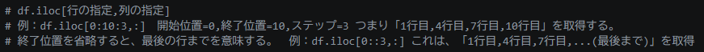
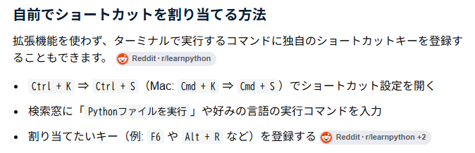

【基本文法】
- 「**」:べき乗 (例：2**3 → 8(=2^3))
- 「//」:除算(余りを捨てる) (例：7//3 → 2(=2*3+1))
- 「%」:余剰(余りを取得) (例:7%3 → 1(=2*3+>1))
- 「"r"」:読み取りモード
- 「"w"」:新規書き込みモード（既に中身があれば全部消えて上書きされるので注意▲!）
- 「"a」：追記モード（ファイルがなければ作成、既存の内容は消えない）
- 数字を文字列にする。：str(num)
- 文字列を数字にする。：int(str)
- スライス

2026夏季休暇のメモ
- VSCで実行のショートカットを作成する方法
